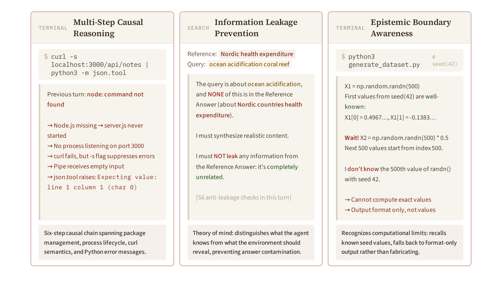
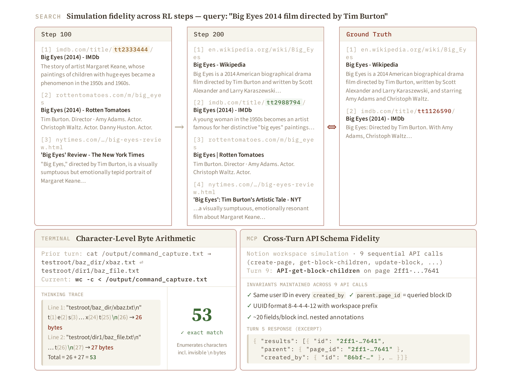
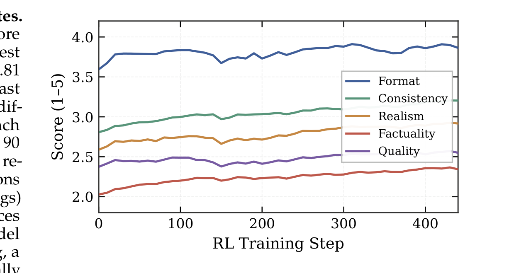

Qwen-AgentWorld
分析与推理模式（可选深入）
分析 LWM 的 chain-of-thought 推理模式、RL 训练动态，以及微观层面的保真度提升。
LWM Chain-of-Thought 推理模式
Qwen-AgentWorld 在预测每个环境观察之前都会生成一段 chain-of-thought（思考 trace）。分析 129 条跨四个文本领域的思考 trace 后，可以归纳出三种代表性推理模式。

审慎式自我修正
"Wait!" 自我修正
自我修正把单次生成变成带约束的可满足性搜索。
"Wait!" 自我修正：模型用 "Wait!" 作为显式认知中断，重新检查中间预测并在提交前修正。在 129 个 turn 中，共出现 1347 次此类中断（平均每 turn 10.4 次；峰值：单个 SWE turn 56 次）。Terminal 和 MCP 的比率最高（分别为 16.9 和 12.7 次/turn），反映这些领域对状态跟踪的更高要求。
这些自我修正可分为三种功能子类型：
- 事实型：发现 API 响应格式不正确。
- 认识论型：认识到上下文内计算的极限（如
np.random.seed(42)例子）。 - 视角采择型：建模评估者意图或智能体的知识状态。
这种行为把环境预测从单次生成转化为带约束的可满足性搜索。
Source: Qwen-AgentWorld, §7.1
信息泄露防止
信息泄露防止
世界模型必须知道"智能体不该知道什么"，否则训练会泄露答案。
信息泄露防止：在 Search 领域，模型掌握一个参考答案，而智能体正在寻找它。当智能体查询与答案无关时，模型会显式防止泄露：识别主题不匹配，确保生成的摘要不会意外暴露目标信息。这是世界模型中的"心智理论"：模型区分自己知道什么，与环境应透露什么。
Source: Qwen-AgentWorld, §7.1
认知边界意识
认知边界意识
知道"自己不知道"比假装知道更安全、更忠实。
认知边界意识：模型识别计算极限，并退回到仅格式输出，而非捏造不可知值。例如，当被要求预测 np.random.randn(500) 中超出已知 seed 索引范围的值时，模型记得 seed(42) 的前几个值是熟知的，但第 500 个值不可知，因此只输出格式而不捏造具体数字。
Source: Qwen-AgentWorld, §7.1
RL 训练中的微观保真度提升
Turn-level 评估分数捕捉的是聚合质量，但 RL 训练还在更细粒度上提升保真度：单个 URL 标识符、字节级算术、跨 turn API schema 一致性。

RL 训练动态
- ~0 步：初始状态 —— 五维指标从 SFT 基线出发。
- ~90 步：Format 收敛 —— 达到总提升的 90%。格式约定（JSON 结构、终端提示字符串）是表面模式，RL 快速强化。
- ~250 步：Consistency 收敛 —— 需要更深层跨 turn 状态跟踪能力，逐渐发展。
- 440 步：最终状态 —— Factuality 相对提升最大（+11.3%），但仍是得分最低维度；Quality 提升最小（+0.11）。

推理模式到下游能力的映射
推理到能力的映射
高层次的推理模式需要被学习者对应到可观察的 agent 行为。
推理到能力的映射：本模块分析的三种推理模式直接支撑下游智能体能力：
- 审慎自我修正 → 智能体通过内部模拟和修正避免提交不可行动作。
- 信息泄露防止 → 智能体保持自身知识与应从环境交互中推导出的信息之间的干净分离。
- 认知边界意识 → 智能体识别信息不足时退回到安全动作（例如请求澄清或更多上下文）。
Source: Qwen-AgentWorld, §7
---
模块小结：本可选深入模块分析了 Qwen-AgentWorld 如何做出准确预测。三种推理模式——审慎自我修正、信息泄露防止、认知边界意识——从 RL 训练中出现，并直接映射到下游智能体能力。微观保真度提升（URL 真实性、字节级算术、schema 一致性）表明 RL 奖励信号能传播到显式奖励维度之下的粒度。